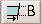

Editace MPEG souborù
1.Úvod
Avidemux umí èíst (indexované) MPEG soubory, a to jak elementary stream, tak program stream (tj. napø. VOB soubory), díky mpeg2dec.
Internì je MPEG vidìn jako snímky s fale¹ným kodekem (MPEG).
Pokud soubor ulo¾íte v re¾imu Copy, výsledkem bude MPEG v AVI, ale proto¾e to není standardní, bude jej umìt pøeèíst jen Avidemux.
2.Rozdìlení, externí multiplexace
Obecné
Jako obvykle si vyberte èást kterou chcete pomocí a . Mìli byste si pøeèíst kapitolu Støih pokud jste tak neuèinili døíve.
Audio
Nevy¾aduje ¾ádnou zvlá¹tní péèi. Jen ulo¾te audio v re¾imu Copy pomocí Audio->Save Audio. Ulo¾í se soubor .mp2 nebo .ac3.
Video
Pro video pou¾ijeme File->Save Raw Video Stream. Pøi této volbì bude demuxer po¾ádán o surová video data, vynechá se dekódování MPEGu. Také zrekonstruuje PTS/DTS logiku pro získání validního MPEG streamu.
Nyní máte .m1v nebo .m2v MPEG-1/2 elementární stream, který by se mìl spojit se souborem .mp2.
Systém
Teï je èas na remultiplexaci obou streamù k získání koneèného souboru .mpg. První seq_header má èasovou znaèku prvního snímku (nestøi¾eného). To mù¾e zmást mplex a uvidíte spoustu chybových hlá¹ek.
Nejlep¹í je k opìtovné multiplexaci pou¾ít tcmplex z transcode.
3.Rozdìlení, interní multiplexace
Obecné
Jako obvykle si vyberte èást kterou chcete pomocí a . Mìli byste si pøeèíst kapitolu Støih pokud jste tak neuèinili døíve. V tomto re¾imu Avidemux ulo¾í MPEG-2 PS stream (lvemux souèást z lvempeg). Tento MPEG-2 PS obsahuje NAV paket a je vhodný pro vytváøení DVD. I mùj Pioneer je akceptuje. :)
Audio
Audio musí být 48 kHz a buï MP2 nebo AC3 (v souèasné dobì to znamená libavcodec AC3 nebo libavcodec MP2). Mù¾e být z re¾imu Process nebo Copy (napøíklad editace nahrávky z PVR).
Video
Video musí být MPEG (co¾ je pochopitelné). Tak jako u audia mù¾e být v re¾imu Copy (upravený PVR nebo DVD) nebo Process (zkonvertovaný AVI nebo nuv).
Ulo¾ení
Nyní pou¾ijeme File->Save as DVD PS. Pokud je audio v re¾imu Copy, budete dotázáni na korekci A/V posunu. U DVD to bývá v rozmezí 0 a¾ 200 ms. U PVR nahrávek to mù¾e být cokoli.
Dùle¾ité
|